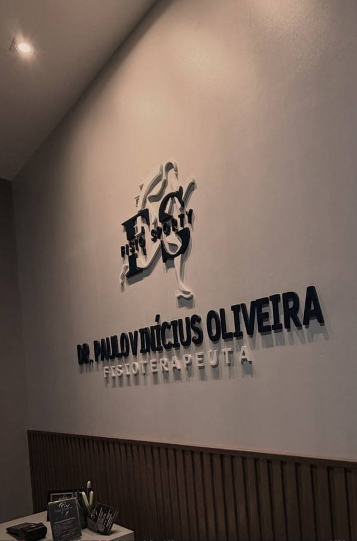
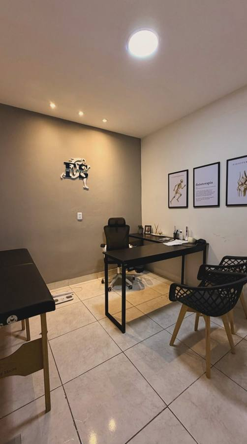

Dr. Wanderson Vasco
Fisioterapeuta · CREFITO 444739-F-F
- Fisioterapia Traumato Ortopédica
- Fisioterapia Esportiva
- Fisioterapia na Saúde do Idoso
- Reabilitação em Coluna Vertebral




Centro integrado de saúde com fisioterapia esportiva, traumato-ortopédica, pós-operatório e muito mais. Agende sua avaliação.
Agendar pelo WhatsAppAtendimento completo para esportistas, idosos, gestantes, crianças e quem está em recuperação de cirurgia.
Fisioterapeutas com registro profissional e especialização nas áreas em que atuam.
Fisioterapeuta · CREFITO 444739-F-F

Fisioterapeuta · CREFITO 453183
Fisioterapeuta · CREFITO 448701-F
Fisioterapeuta · CREFITO 368812-F
Fisioterapeuta · CREFITO 396499-F
Nutricionista · CRN 28323
Nutricionista · CRN 50250
Psicólogo · CRP 02/26848
Fale com a clínica pelo WhatsApp e escolha o melhor horário para você.
(87) 99802-7603